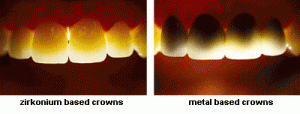

Zirconium Crowns
Do you want to learn about Zirconium Crowns to discover if zirconium crowns
are the right choice for you?
These days with so much information on the internet it can get confusing
and frustrating trying to discover which dental treatment is right for you
and it’s hard to know who to believe and trust.
I have put this blog together to ensure that you get the right information
you need to make the best decision, when deciding if zirconium crowns are
the right choice for you, or if one of the other dental treatments is more appropriate for you.
Zirconium crowns and bridges are so strong they can be used anywhere in the
mouth. Zirconium crowns can withstand the biting pressure of the front
teeth as well as back teeth grinding.
The look of zirconium crowns and bridges is so close to natural teeth
that it is hard to tell the difference and it is this quality which
makes it very useable within dental work. Zirconium crowns can be
fixed using traditional dental cements.
Zirconium crowns have quickly become the preferred material for dental crowns.
Zirconium is a very strong substance that can endure wear and tear of everyday use.
When looking at Zirconium crowns from an aesthetic point it is clear and very similar
to a natural tooth and reflects light the same way. This may be important if your new
crowns are on the front of your mouth and it is particularly relevant in cases where the
crown will be seen next to the natural teeth.
Porcelain is the conventional material used for the new crowns however,
Full porcelain can chip or break. This is overcome by making the crowns from the metal,
in this case metal zirconia, then merge the porcelain on the outside. Zirconia metal gives
the strength while the porcelain gives the appearance of a normal tooth. Zirconium crowns
allow light to pass as a normal tooth would and that gives a natural look, unlike other
metal cores that are block the light.
General Definition: A crown is a dental restoration that completely covers
or surrounds a tooth or dental implant and it is typically fixed to the tooth
using traditional dental cement. Crowns can be made out of numerous materials,
which are usually fabricated using out-of-mouth method. Crowns are frequently used to
improve strength or appearance of teeth. Full-porcelain (ceramic) dental materials include
porcelain, ceramic or glass screen fillings and crowns (aka jacket crown, a metal free option).
Overview
Zirconium crowns won’t corrode and the normal black gum line that you can see around a porcelain
fused metal crown, won’t happen because of the strong ceramic material used. Also the normal too
hot/cold sensations you can feel with other crowns does not normally occur because of the lack of
electrical conductivity.
Zirconium Crowns – Procedures
Procedure consists of:To accommodate the new zirconium crowns a portion of your natural tooth’s structure is removed.
A temporary crown will be installed between visits, while the custom zirconium crowns are made in our laboratories, from the impression taken of the original teeth.